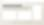
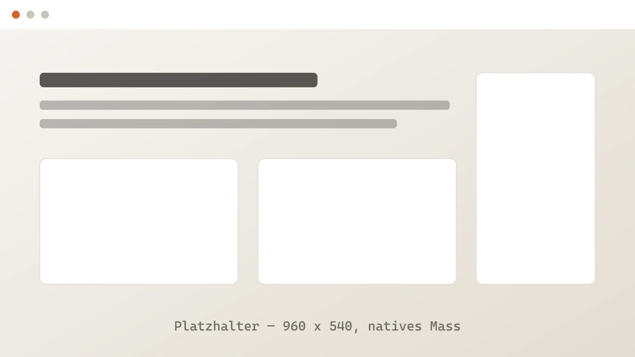
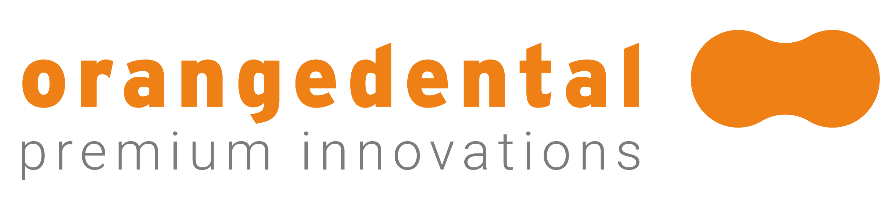

Was sie kann, wie sie funktioniert, wo sie uns hilft.
Referenzfolie Titel. Groesste Schriftstufe (.h-xl, 168 px), Rahmenelemente,
Startzustand. data-bare unterdrueckt Kopfzeile und Zaehler,
data-divider zieht die Aurora breit und hebt das Lichtzeichen an.
Der Platzhaltertext wird im Inhaltsschritt ersetzt — der Aufbau bleibt.
Platzhalter fuer die Einordnung des Abschnitts — eine Zeile, kein Absatz.
Referenzfolie Abschnittstrenner. Traegt data-bare (keine Kopfzeile)
und trotzdem data-section — die Folienuebersicht liest das Attribut,
decorate() nicht.
Textspalte links, Panel rechts. Der Trennstrich bringt seine Abstaende selbst mit — er funktioniert in jedem Layout, nicht nur in diesem.


Referenzfolie Arbeitspferd. Panelhoehe ist aus dem nativen Seitenverhaeltnis gerechnet, nicht geschaetzt: 908 x 511 bei 908 px Anzeigebreite ergibt Faktor 1,00.
Die drei Panelebenen gehoeren zusammen: .shot__spill wirft die Farben
nach hinten, .shot__frame traegt das Bild, .shot__soft blendet
beim Eintritt aus und laesst das Panel scharf werden. Beide Zwillinge sind 44 px breit —
sie sind die Weichzeichnung und deshalb in deck.config.json vom Bilddeckel
ausgenommen.
Referenzfolie Kartenraster. Prueft Rastermasse, gleich hohe Karten und die
#i-*-Piktogramme in ihrer Anzeigegroesse von 44 px.
.glass ist zunaechst nur eine Attrappe; das echte
backdrop-filter setzt liveGlass() erst nach dem Uebergang,
und hoechstens einmal pro Folie.
Referenzfolie Aufbaustufen. data-fragments ist die Anzahl der
Zustaende, nicht der Einblendungen: Zustand 0 ist die Folie ohne jeden Punkt,
data-frag="1" erscheint ab Zustand 1. Drei Punkte ergeben also
data-fragments="4".
Rueckwaerts betreten zeigt die Folie ihren letzten Zustand — sie muss nicht noch einmal durchgeklickt werden. Im PDF wird jeder Zustand eine eigene Seite.
